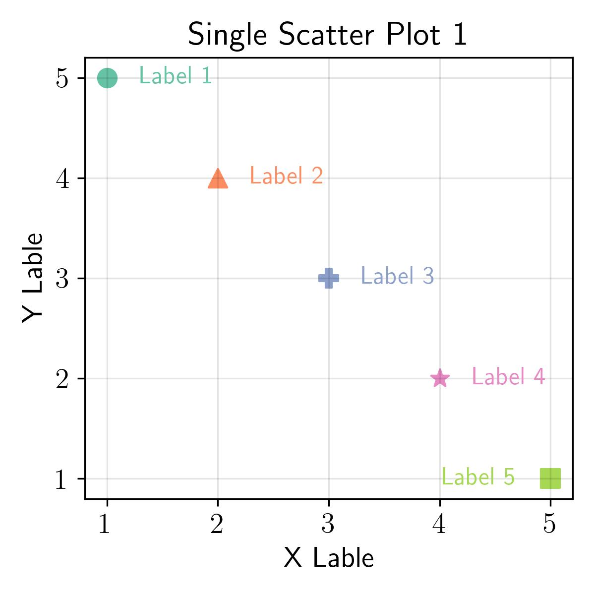

# Packages
import numpy as np
import matplotlib.pyplot as plt
from matplotlib import cm
# Use LaTeX font
plt.rcParams.update({'text.usetex': True})
# Figure font config
label_font = {'fontfamily': 'Arial Black', 'fontsize': 14}
title_font = {'fontfamily': 'Arial Black', 'fontsize': 16}
legend_font = {'family': 'Palatino Linotype', 'size': 10}
text_font = {'family': 'Palatino Linotype', 'fontsize': 12}
# Generate data
x = [1, 2, 3, 4, 5]
y = [5, 4, 3, 2, 1]
label_list = ['Label 1', 'Label 2', 'Label 3', 'Label 4', 'Label 5']
marker_list = ['o', '^', 'P', '*', 's']
# Plot
fig, ax = plt.subplots(1, figsize=(4, 4))
for i in range(len(x)):
ax.scatter(
x[i], y[i],
color=cm.Set2(i),
marker=marker_list[i],
s=80
)
if i < 4:
ax.text(
x[i] + 0.3, y[i],
label_list[i],
fontdict=text_font,
color=cm.Set2(i),
verticalalignment='center',
horizontalalignment='left'
)
else:
ax.text(
x[i] - 0.3, y[i],
label_list[i],
fontdict=text_font,
color=cm.Set2(i),
verticalalignment='center',
horizontalalignment='right'
)
# Label and title
ax.set_xlabel('X Lable', fontdict=label_font)
ax.set_ylabel('Y Lable', fontdict=label_font)
ax.set_title('Single Scatter Plot 1', fontdict=title_font)
# Ticks fontsize and font family
ax.tick_params(axis='both', which='major', labelsize=14)
labels = ax.get_xticklabels() + ax.get_yticklabels()
[label.set_fontname('serif') for label in labels]
# Grid
ax.grid(axis='both', color='black', alpha=0.1)
plt.tight_layout()
plt.savefig('../fig/single-scatter-1.jpg', dpi=300)